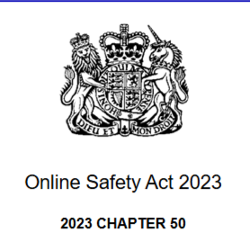
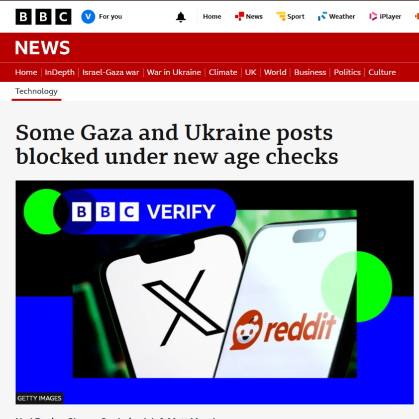

The Black Bar Archive Project
Despite being officially created on the 2nd of August 2025, the idea and concepts that would eventually culminate in the Black Bar Archive floated around my mind many years earlier.
I never pulled the trigger though, as web development was honestly a mess at the time and the most prominent reason was; I had no real reason to create something like this.
That was, of course, until the Government Of the United Kingdom released perhaps the most blantant example of legislature corruption yet, the Online Safety Act.

My issue is less with the bill itself, but what intentions truly hid behind this powerful bill. It was no less then a few weeks of the the Online Safety Act being in effect until the true weaponisation of censorship was seen. The Government brigaded a seemingly well meaning piece of legislature, intended to keep children safe,
When in reality it was a kneejerk reaction in attempts to censor and manipulate the truth with what is happening in Gaza.

A genocide, mind you.
It was at this point, I found a reason to create this project. Black Bar reffering to the CIA Black Bars used to censor and redact information
I intend to grow the archive, to make information as accesable and free as possible, with not a single cent being made.
And no, I am not expecting this project to have an impact, change much or even be noticed. I created this project mainly for me, it's the website I want to see on the internet, especially in the current climate.
The Project is never finished, I plan to expand on it for as long as it stays up.